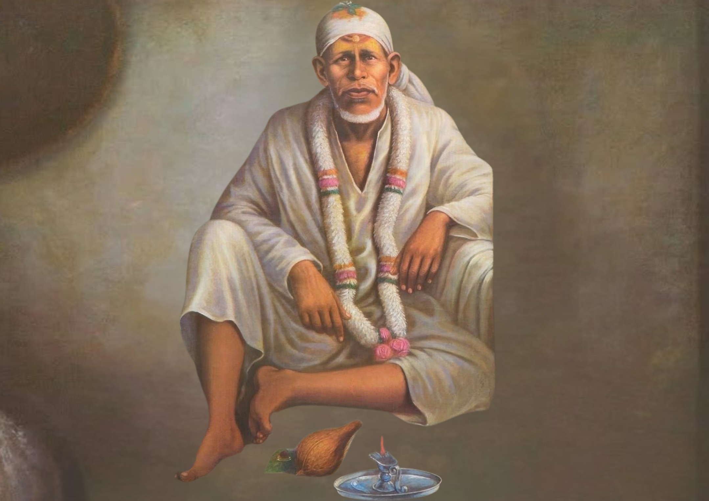

श्री साई बाबा की कृपा
Experience Sai Baba’s divine love, teachings, and guidance in your daily life.

Teachings
Learn Sai Baba’s divine teachings to illuminate your life.
Miracles
Read inspiring stories of Sai Baba’s miracles shared by devotees.
Daily Quote
Receive daily spiritual guidance and motivation from Sai Baba.
Worship
Explore rituals and prayers to connect with Sai Baba every day.